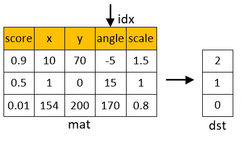

|
类型 |
访问 |
|
描述 |
计算排序索引，对矩阵行（列）排序，按排序顺序输出排序前的行（列）号，注意输出结果为图像类型 |
|
语法 |
ZV_MatSortIndex(mat,sortIndex,idx,isAsec,isSortCol)
参数： mat：ZVOBJECT类型，矩阵 sortIndex：ZVOBJECT类型，单通道16U图像，n行1列，排序后的行或列原始序号（16位无符号整数），即第一行是排序第一的目标在mat中的行号或列号 idx：用于指定排序的行号或列号，意义为idx对应的行或列所代表的数值用于排序 isAsec：0-降序从大到小；1-升序从小到大 isSortCol：0-按行排序，idx指定排序的列序号；1-按列排序，idx指定排序的行序号 |
|
适用控制器 |
支持ZV功能或者5系列以上的控制器 |
|
例子 |
 '假设矩阵为匹配结果矩阵，每一列对应一种属性 ZVOBJECT mat,dst TABLE(0,0.9,10,70,-5,1.5,0.5,1,0,15,1,0.01,154,200,170,0.8) ZV_MatGenData(mat,3,5,0) '使用TABLE中的数据，生成一个3*5的矩阵 ZV_MatSortIndex(mat,dst,3,0,0) 'idx选择第四列（angle属性）降序排序时的排序索引 |
|
相关指令 |